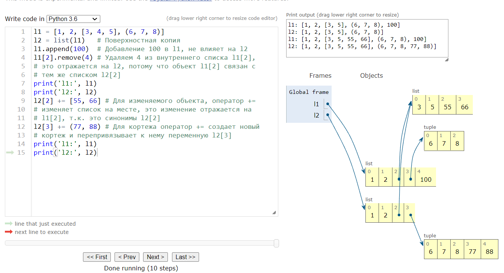
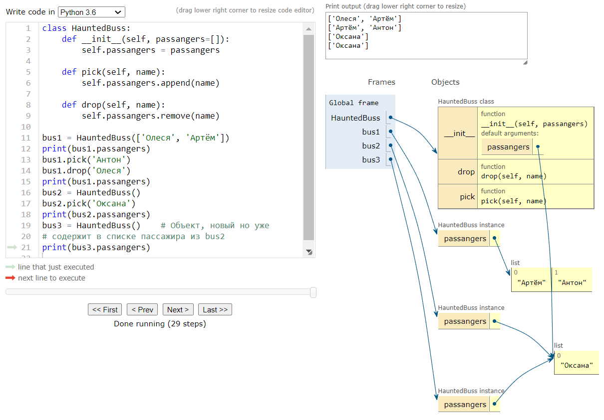
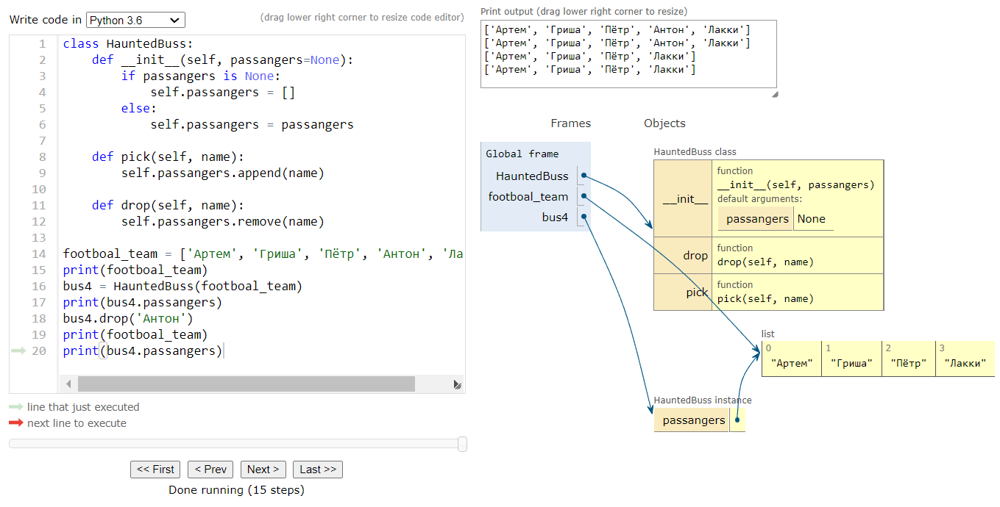

Глава 5. Словари и множества
Все словари наследуют класс collections.abc.Mapping. Ключи должны быть хэшируемые. Включать метод hash() и eq() Объект называется хэшируемым, если он обладает хэш-значением, которое не изменяется на протяжении всей жизни объекта и допускает сравнение с другими объектами.
a = dict(one=1, two=2, three=3)
b = {'one': 1, 'two': 2, 'three': 3}
c = dict(zip(['one','two','three'],[1,2,3]))
d = dict([('two', 2), ('one', 1), ('three', 3)])
e = dict({'two': 2, 'one': 1, 'three': 3})
a == b == c == d == e
TrueТексты и байты.
Всё что нужно знать о байтах: главное это то, что существут 2 основных типа основных типа отображения двоичных последовательностей: изменяемы тип bytes, появившийся в py3 и не изменяемы тип bytearray. Каждый элемент bytes или bytearray - целое число от 0 до 255
Полноправные функции
Семь видов вызываемых объектов
Оператор () можно применять не только к функциям, определённым пользователями. Что бы понять является ли объект вызываемым, воспользуейтесь функцией:
callable()| Функция | Описание |
|---|---|
Пользовательские функции |
Создаются при помощи выражения |
Встроенные функции |
Функции написанные на C (в случае CPython), например |
Методы |
Функции определённые в теле класса |
Встроенные методы |
Метода написанные на C, например dict.get |
Классы |
При вызове класса выполняется свой метод |
Экземпляры классов |
Если в классе определен метод |
Генераторные функции |
Функции или методы, в которых используется ключевое слово |
| Учитывая разнообразие вызываемых типов в Python, самый безопасный способ узнать, является ли объект вызываемым, - воспользоваться встроенной функцией callable() |
Пользовательские вызываемые типы
__call__import random
class BingoCage:
"""
Экземпляр этого класса строится из любого иттерируемого объекта и
хранит внутри себя список элементов в случайном порядке. При вызове
экземпляра из списка удаляется один элемент.
"""
def __init__(self, items=None):
"""
Метод __init__ принимает произвольный иттерируемый объект;
Создание локальной копии предотвращает изменение списка, переданного
в качестве аргумента.
"""
self._items = list(items)
random.shuffle(self._items) # Метод shuffle гарантированно работает, т.к. self._items объект тип list.
def pick(self):
"""
Основной метод.
"""
try:
return self._items.pop()
except IndexError:
# Возбудить исключение со специальным сообщением, если список self._items пустой.
raise LookupError('pick from empty BingoCage')
def __call__(self):
"""
Позволяет писать просто bingo() вместо bingo.pick()
:return:
"""
return self.pick()>>> from source.bingocall import BingoCage
>>> bingo = BingoCage(range(3))
>>> bingo.pick()
2
>>> bingo()
1
>>> callable(bingo)
True
Объект bingo можно вызвать как функцию, и встроенная функция callable(…) распознает его как вызываемый объект
|
def tag(name, *content, cls=None, **attrs):
"""
Функция tag генерирует HTML; чисто именованый аргумент cls
для передачи аттрибута "class". Это обходное решение необходимо,
т.к. в Python class - Зарезервированное слово.
"""
print(name)
if cls is not None:
attrs['class'] = cls
if attrs:
attr_str = ''.join(' %s="%s"' % (attr, value) for attr, value in sorted(attrs.items()))
else:
attr_str = ''
if content:
return '\n'.join('<%s%s>%s</%s>' % (name, attr_str, c, name) for c in content)
else:
return '<%s%s />' % (name, attr_str)Получение информации о параметрах
-
У объекта-функции есть аттрибут
defaults, в котором хранится кортеж со значениями по умолчанию позиционных и именованных параметров. -
Значения чисто именованных аргументов находятся в
kwdefaults -
Сами имена параметров находятся в атрибуте
code, который содержится ссылку на объектcodeс множеством своих собственных параметров
>>> from source.tag import tag
>>> tag.__code__.co_varnames
('name', 'cls', 'content', 'attrs')
>>> tag.__code__.co_argcount
1inspect.signature
Метод inspect.signature возвращает объект inspect.Signature, у которого есть аттрибут parameters, позволяющий прочитать упорядоченное отображение имен на объекы типа inspect.Parameter. У каждого объекта Parameter есть набор аттрибутов, например: name, default и kind. Специально значение inspect._empty обозначающий параметры, не имеющие значения по-умолчанию.
>>> from inspect import signature
>>> sig = signature(help)
>>> sig
<Signature (*args, **kwds)>
>>> str(sig)
'(*args, **kwds)'
>>> for name, param in sig.parameters.items(): print(param.kind, ':', name, '=', param.default)
...
VAR_POSITIONAL : args = <class 'inspect._empty'>
VAR_KEYWORD : kwds = <class 'inspect._empty'>
>>> sig = signature(open)
>>> for name, param in sig.parameters.items(): print(param.kind, ':', name, '=', param.default)
...
POSITIONAL_OR_KEYWORD : file = <class 'inspect._empty'>
POSITIONAL_OR_KEYWORD : mode = r
POSITIONAL_OR_KEYWORD : buffering = -1
POSITIONAL_OR_KEYWORD : encoding = None
POSITIONAL_OR_KEYWORD : errors = None
POSITIONAL_OR_KEYWORD : newline = None
POSITIONAL_OR_KEYWORD : closefd = True
POSITIONAL_OR_KEYWORD : opener = NoneУ объекта inspect.Signature имеется метод bind, который принимает любое количество атрибутов и связывает их с параметрами, указанных в сигнатуре, следуя обычным правилам сопоставления фактических аргументов с формальными параметрами.
| Каркас может использовать эту возможность для проверки аттрибутов до фактического вызова функции. |
tag со словарём аргументов>>> import inspect
>>> from source.tag import tag
>>> sig = inspect.signature(tag)
>>> my_tag = {
... 'name' : 'img',
... 'title' : 'Sunset Boulevard',
... 'src' : 'sunset.jpg',
... 'cls' : 'framed'
... }
>>> bounds_args = sig.bind(**my_tag)
>>> bounds_args
<BoundArguments (name='img', cls='framed', attrs={'title': 'Sunset Boulevard', 'src': 'sunset.jpg'})>
>>> for name, value in bounds_args.arguments.items(): print(name, '=', value)
...
name = img
cls = framed
attrs = {'title': 'Sunset Boulevard', 'src': 'sunset.jpg'}
>>> del my_tag['name']
>>> bounds_args = sig.bind(**my_tag)
Traceback (most recent call last):
File "<pyshell#16>", line 1, in <module>
bounds_args = sig.bind(**my_tag)
File "C:\Users\User\AppData\Local\Programs\Python\Python38-32\lib\inspect.py", line 3025, in bind
return self._bind(args, kwargs)
File "C:\Users\User\AppData\Local\Programs\Python\Python38-32\lib\inspect.py", line 2940, in _bind
raise TypeError(msg) from None
TypeError: missing a required argument: 'name'
>>>| На этом примере видно, как модель данных Python - посредством модуля inspect - раскрывает механизм, которым пользуется сам интерпретатор дя связывания аргументов с формальными параметрами при вызове функии. |
Аннотация функций
def clip(text: str, max_len: 'int > 0' = 80) -> str: # Аннотированное объявление функции
"""
Return text clipped at the last space before or after max_len
:param text:
Переменная с текстом
:param max_len:
Максимальная длина возвращаемой строки
:return:
Возращает строку обрезаную до последнего пробела или до максимальной длины.
"""
end = None
if len(text) > max_len:
space_before = text.rfind(' ', 0, max_len)
if space_before >= 0:
end = space_before
else:
space_after = text.rfind(' ', max_len)
if space_after >= 0:
end = space_after
if end is None: # No spaces were found
end = len(text)
return text[:end].rstrip()-
У любого аргумента в объявлении функции может быть выражение аннотации, которому предшествует
:. -
Если у аргумента есть значение по-умолчанию, то аннотация располагается между именем и знаком
=. -
Что-бы аннотировать возвращаемое значение, поместите
→и вслед за ним выражение между знаком)и двоеточием в конце объявления функции. -
Аннотации никак не обрабатываются. Они просто сохраняются в аттрибуте функции
__annotations__типdict
>>> from source.clip_annot import clip
>>> clip.__annotations__
{'text': <class 'str'>, 'max_len': 'int > 0', 'return': <class 'str'>}Пакеты для функционального программирования
Модуль operator
Модуль operator включает в себя функции для выборки элементов из последовательностей и чтения атрибутов объектов: itemgetter и attrgetter строят специализированные функции для выполнения этих действий.
itemgetter для сортировки списка кортежейfrom operator import itemgetter
metro_data = [
('Tokyo', 'JP', 36.933, (35, 139)),
('Delhi NCR', 'IN', 21.935, (28, 77)),
('Mexico City', 'MX', 20.142, (19, -99)),
('New York-Newark', 'US', 20.104, (40, -74)),
('Sao Paulo', 'BR', 19.649, (-23, -46)),
]
for city in sorted(metro_data, key=itemgetter(1)):
print(city)py .\metro_data.py
('Sao Paulo', 'BR', 19.649, (-23, -46))
('Delhi NCR', 'IN', 21.935, (28, 77))
('Tokyo', 'JP', 36.933, (35, 139))
('Mexico City', 'MX', 20.142, (19, -99))
('New York-Newark', 'US', 20.104, (40, -74))Фиксация аргументов с помощью functools.partial
В модуле functools собраны некоторые функции высшего порядка. Из них наиболее широко известна функция reduce. Помимо неё, особенно полезна функция partial и её вариация partialmethod.
-
functools.partial— функция высшего порядка. Позволяет применять функцию "частично". Получив на вход некоторую функцию,partialсоздает новый вызываемый объект, в котором некоторые аргументы исходной функции фиксированы. Функцияpartialпринимает в первом аргументе вызываемый объект, а за ним - произвольное число позиционных и именованных аргументов, подлежащих связыванию.
>>> import functools
>>> import unicodedata
>>> nfc = functools.partial(unicodedata.normalize, 'NFC')
>>> s1 = 'café'
>>> s2 = 'cafe\u0301'
>>> nfc(s1) == nfc(s2)
True
>>> s1 == s2
False-
functools.partialmethod— делает тоже самое, что иpartial, но предназначена для работы с методами.
Спецификации и статьи по пройденному материалу:
Глава 6. Реализация паттернов проектирования с помощью полноправных функций.
Практический пример: переработка паттерна Стратегия.
|
В книге "Паттерны проектирования" паттерн Стратегия описывается следующим образом:
Определить семейство алгоритмов, инкапсулировать каждый из них и сделать их взаимозаменяемыми. Стратегия позволяет заменять алгоритмы независимо от использующих его клиентов.
|
Наглядный пример применения паттерна Стратегия к коммерческой задаче — вычисление скидок на заказы в соответствии с характеристиками заказчика или результатами анализа заказанных позиций. Рассмотрим интернет-магазин со следующими правилами формирования скидок:
-
Заказчику, имеющему не менее 1000 баллов лояльности, предоставляется глобальная скидка
5%на весь заказ; -
На позиции, заказанные в количестве не менее 20 штук, предоставляется скидка
10% -
На заказы, содержащие не мене 10 различных позиций, предоставляется глобальная скидка
7%
Для простоты предложим, что к каждому заказчику может быть применена только одна скидка.

|
Контекст
Представляет службу, делегируя часть вычислений взаимозаменяемым компонентам, реализующих различные алгоритмы. В примере Интернет-магазина контекстом является класс Order, который конфигурируется для применения поощрительной скидки по одному из нескольких алгоритмов.
|
|
Стратегия
Интерфейс, общий для всех компонентов, реализующих различные алгоритмы. В нашем примере эту роль играет абстрактный класс Promotion.
|
|
Конкретные стратегии
Один из конкретных подклассов Стратегии. В нашем примере реализованы три конкретные стратегии: FidelityPromo, BulkItemPromo, LargeOrderPromo.
|
В нашем примере система, перед тем как создать объект заказ, должна каким-то образом определит стратегию предоставления скидки и передать ее конструктору класса Order.
Вопрос о выборе стратегии не является предметом данного паттерна.
Order с помощью взаимозаменяемых стратегийfrom abc import ABC, abstractmethod
from collections import namedtuple
Customer = namedtuple('Customer', 'name fidelity')
class LineItem:
def __init__(self, product, quantity, price):
self.product = product
self.quantity = quantity
self.price = price
def total(self):
return self.price * self.quantity
class Order:
"""
Контекст
"""
def __init__(self, customer, cart, promotion=None):
self.customer = customer
self.cart = list(cart)
self.promotion = promotion
def total(self):
if not hasattr(self, '__total'):
self.__total = sum(item.total() for item in self.cart)
return self.__total
def due(self):
if self.promotion is None:
discount = 0
else:
discount = self.promotion.discount(self)
return self.total() - discount
def __repr__(self):
return f'<Order total: {self.total():.2f} due: {self.due():.2f}>'
class Promotion(ABC):
"""
Стратегия: абстрактный базовый класс
"""
@abstractmethod
def discount(self, order):
"""
Вернуть скидку в виде положительной суммы в долларах
:param order:
:return:
"""
class FidelityPromo(Promotion):
"""
5%-я скидка для заказчиков, имеющих не менее 1000 баллов лояльности
"""
def discount(self, order):
return order.total() * .05 if order.customer.fidelity >= 1000 else 0
class BulkItemPromo(Promotion):
"""
10%-я скидка для каждой позиции LineItem, в которой заказано не мене 20 единиц
"""
def discount(self, order):
discount = 0
for item in order.cart:
if item.quantity >= 20:
discount += item.total() * .1
return discount
class LargeOrderPromo(Promotion):
"""
7%-я скидка для заказов, включающих не менее 10 различных позици
"""
def discount(self, order):
distinct_items = {item.product for item in order.cart}
if len(distinct_items) >= 10:
return order.total() * .07
return 0Пример работает без нареканий, но ту же функциональность можно реализовать в Python гораздо короче, воспользовавшись функциями как объектами.
Функционально-ориентированная стратегия.
Каждая конкретная стратегия в примере — это класс с одним методом discount. Сильно напоминают функции.
В следующем примере код переработан — конкретные классы заменены функциями, а абстрактный класс Promo исключен
Order, в котором реализован в виде функцийfrom collections import namedtuple
Customer = namedtuple('Customer', 'name fidelity')
class LineItem:
def __init__(self, product, quantity, price):
self.product = product # Наименование
self.quantity = quantity # Количество
self.price = price # Цена
def total(self):
return self.price * self.quantity # Общая стоимость позиции
class Order: # Контекст
def __init__(self, customer, cart, promotion=None):
self.customer = customer
self.cart = cart
self.promotion = promotion
def total(self):
if not hasattr(self, '__total'):
self.__total = sum(item.total() for item in self.cart)
return self.__total
def due(self):
if self.promotion is None:
discount = 0
else:
discount = self.promotion.discount(self)
return self.total() - discount
def __repr__(self):
return f'<Order total: {self.total():.2f} due: {self.due():.2f}>'
def fidelity_promo(order):
"""
5%-я скидка для заказчиков, имеющих не менее 1000 баллов лояльности
"""
return order.total() * .05 if order.customer.fidelity >= 1000 else 0
def bulk_item_promo(order):
"""
10%-я скидка для каждой позиции LineItem, в которой заказано не мене 20 единиц
"""
discount = 0
for item in order.cart:
if item.quantity >= 20:
discount += item.total() * .1
return discount
def large_order_promo(order):
"""
7%-я скидка для заказов, включающих не менее 10 различных позици
"""
distinct_items = {item.product for item in order.cart}
if len(distinct_items) >= 10:
return order.total() * .07
return 0Выбор наилучшей стратегии: простой подход
from source.strategy_3 import fidelity_promo, bulk_item_promo, large_order_promo
promos = [fidelity_promo, bulk_item_promo, large_order_promo]
# promos - список стратегий реализованный в виде функций
def best_promo(order):
"""
:param order: список покупок
:return: максимально возможную скидку из params
"""
return max(promo(order) for promo in promos)Фишка в том что бы воспринимать функцию как объект, который можно передавать в виде параметра.
В данном коде возможна тонка ошибка. При написании новой стратегии, возможно забыть добавить её в список promos.
|
Поиск стратегии в модуле
globals() - возвращает словарь, представляющий текущую таблицу глобальных символов. Это всегда словарь текущего модуля.
|
promos = [globals()[name] for name in globals() if name.endswith('_promo') and name != 'best_promo']
"""
promos - перебираем все имена в словаре,
возвращенном функцией global(), оставляем
только те что с суффикосом _promo и не best_promo
"""
def best_promo(order):
"""
:param order: список покупок
:return: максимально возможную скидку из params
"""
return max(promo(order) for promo in promos)Паттерн Команда
| Цель Команды - разорвать связь между объектом, инициировавшим операцию (Инициатором) и объектом, который её реализует (Получатель). |
В примере Инициаторы - это пункты меню в графическом редакторе, а Получателем - редактируемый документ или само приложении.

PasteCommand получателем является Document, а для OpenCommand- приложение.Идея в том, что бы между инициатором и исполнителем поместить объект Command, который реализует интерфейс с одним
методом execute(), вызывающим какой-то метод Получателя для выполнения желаемой операции. Таким образом, Инициатор
ничего не знает об интерфейсе Получателя, так что, написав подкласс Command, можно адаптировать различные получатели.
Инициатор конфигурируется конкретной командой и вызывает ее метод execute.
Класс MacroCommand, который может содержать последовательность команд; его метод execute() вызывает одноименные методы каждой хранимой команды.
|
Вместо передачи объекта Command, мы можем передать обычную функцию. Реализовать можно через специальный метод __call__.
Тогда MacroCommand будут вызываемыми объектами, содержащими список функций для последующего вызова.
class MacroCommand:
"""
Команда, выполняющая список команд
"""
def __init__(self, commands):
self.commands = list(commands)
def __call__(self, *args, **kwargs):
for command in self.commands:
command()Ссылочки и дополнительные материалы
#!./venv/Scripts/python.exe
# -*- coding: utf-8 -*-
"""
Паттерн СТРАТЕГИЯ определяет семейство алгоритмов, инкапсулирует
каждый из них и обеспечивает их взаимозаменяемость. Он позволяет
модифицировать алгоритмы независимо от их использования на сторо-
не клиента.
"""
COLLEAGUES = ('Павел Клименко', 'Павел Румянцев', 'Николай Ластовский',
'Кирилл Кулешов', 'Сергей Мирук', 'Алёна Ларина')
class Layout:
"""
Этот класс поддерживает только один алгоритм: табуляция. Функция,
реализующая этот алгоритм, ожидает получить счетчик строк и после-
довательность элементов, а возвращает результат в виде таблицы.
"""
def __init__(self, tabulator):
self.tabulate = tabulator
def tabulate(self, rows, items):
return self.tabulator(rows, items)
def main():
"""
В этой функции создаются 2 объекта Layout, параметризованные
различными функциями-табуляторами. Для каждого формата печатается
таблица с 2,3,4,5 строками
:return:
"""
htmlLayout = Layout(html_tabulator)
for rows in range(2, 6):
print(htmlLayout.tabulate(rows, COLLEAGUES))
textLayout = Layout(text_tabulator)
for rows in range(2, 6):
print(textLayout.tabulate(rows, COLLEAGUES))Глава 7. Декораторы и функции замыкания
| Декоратор - это вызываемый объект, принимающий в качестве аргумента другую функцию. |
Главное, что нужно знать о декораторах:
-
Тот факт, что они властны заменить декорируемую функцию другой;
-
Выполняется сразу после загрузки модуля;
Паттерн Стратегия, дополненный декоратором
promos заполняется декоратором promotionfrom collections import namedtuple
Customer = namedtuple('Customer', 'name fidelity')
class LineItem:
def __init__(self, product, quantity, price):
self.product = product # Наименование
self.quantity = quantity # Количество
self.price = price # Цена
def total(self):
return self.price * self.quantity # Общая стоимость позиции
class Order: # Контекст
def __init__(self, customer, cart, promotion=None):
self.customer = customer
self.cart = cart
self.promotion = promotion
def total(self):
if not hasattr(self, '__total'):
self.__total = sum(item.total() for item in self.cart)
return self.__total
def due(self):
if self.promotion is None:
discount = 0
else:
discount = self.promotion.discount(self)
return self.total() - discount
def __repr__(self):
return f'<Order total: {self.total():.2f} due: {self.due():.2f}>'
promos = []
def promotion(promo_func):
promos.append(promo_func)
return promo_func
@promotion
def fidelity(order):
"""
5%-я скидка для заказчиков, имеющих не менее 1000 баллов лояльности
"""
return order.total() * .05 if order.customer.fidelity >= 1000 else 0
@promotion
def bulk_item(order):
"""
10%-я скидка для каждой позиции LineItem, в которой заказано не мене 20 единиц
"""
discount = 0
for item in order.cart:
if item.quantity >= 20:
discount += item.total() * .1
return discount
@promotion
def large_order(order):
"""
7%-я скидка для заказов, включающих не менее 10 различных позици
"""
distinct_items = {item.product for item in order.cart}
if len(distinct_items) >= 10:
return order.total() * .07
return 0
def best_promo(order):
"""
Выбрать максимально возможную скидку
"""
return max(promo(order) for promo in promos)По сравнению с другими решениями, у этого есть несколько преимуществ:
-
Функции, реализующие стратегии вычисления скидки могут избавиться от суффикса
_promo -
Декоратор
@promotionявно описывает назначение декорируемой функции и без труда позволяет временно отменить предоставление ссылки: достаточно закомментировать декоратор -
Стратегии скидки можно определить в других модулях.
Правила видимости переменных
Видимость локальных переменных определяется при компилировании байт-кода и если одноименная переменная определена в теле функции, то она будет считаться локальной.
Замыкания
Замыкание вступает в игру только при наличии вложенной функции.
| Замыкание — это функция с расширенной областью видимости, которая охватывает все не глобальные переменные, имеющие ссылки в теле функции, хотя они в нем не определены. |
Эту идею довольно трудно переварить, поэтому пример.
Рассмотрим функцию avg, которая вычисляет среднее продолжающегося ряда чисел, например, среднюю цену закрытия биржевого товара за всю историю торгов. Каждый день ряд пополняется новой ценой, а при вычислении среднего учитываются все прежние цены.
avg можно было бы использовать следующим образом:>>> avg(10)
10.0
>>> avg(11)
10.5
>>> avg(12)
11.0|
Вопрос на подумать
Откуда берется avg и где она хранит предыдущие значения?
|
Реализация Average основанная на классах.
class Averager:
def __init__(self):
self.series = []
def __call__(self, new_value):
self.series.append(new_value)
total = sum(self.series)
return total/len(self.series)Averager создает вызываемые объекты>>> from source.average_oo import Averager
>>> avg = Averager()
>>> avg(10)
10.0
>>> avg(11)
10.5
>>> avg(12)
11.0>>> import doctest
>>> doctest.testfile('./source/doctest/avg_oo.txt')
TestResults(failed=0, attempted=5)Функциональная реализация с использованием функции высшего порядка make_averager
def make_averager():
"""
При обращении к make_averager возвращается объект-функция averager.
При каждом вызове averager добавляет переданный аргумент в конец
списка series и вычисляет текущее среднее.
:return:
"""
series = []
def averager(new_value):
series.append(new_value)
total = sum(series)
return total/len(series)
return averager
Обратите внимание на сходство обоих примеров: мы обращаемся к Averager и к make_averager что бы получить вызываемый объект avg, который обновляет временной ряд и вычисляет среднее значение.
|
Совершенно ясно, где хранит историю объектов avg класса Averager: в аттрибуте экземпляра self.series. Но где находится series функции avg из второго примера?
Внутри averager переменная series является свободной. Этот технический термин обозначает, что переменная не связана в локальной области видимости.
|
Python хранит имена локальных и свободных переменных в аттрибуте __code__, который представляет собой откомпилированное тело функции.
|
make_averager>>> from source.average import make_averager
>>> avg = make_averager()
>>> avg.__code__.co_varnames
('new_value', 'total')
>>> avg.__code__.co_freevars
('series',)Привязка переменной series хранится в аттрибуте __closure__ возвращенной функцией avg.
Каждому элементу avg.__closure__ соответствует имя в avg.__code__.co_freevars. Эти элементы называются ячейками(cells), и у каждого из них есть атрибут cell_contents, где можно найти само значение.
|
make_averager (продолжение)>>> avg.__closure__
(<cell at 0x040DC358: list object at 0x039FA368>,)
>>> avg.__closure__[0].cell_contents
[10, 11, 12]|
Резюмируем:
Замыкание — это функция, которая запоминает привязку свободных переменных, существовавшие на момент определения функции. Так что их можно использовать впоследствии при вызове функции, когда область видимости, в которой она была определена уже не существует.
|
| Единственная ситуация, когда функции может понадобиться доступ к внешней не глобальной переменной,- это когда она вложена в другую функцию. |
Объявление nonlocal
Приведенная ранее реализация make_averager не эффективна. Мы храним в переменной все значения и каждый раз вычисляем их сумму при каждом вызове averager. Лучше было бы хранить предыдущую сумму и количество элементов, тогда зная два числа мы можем вычислить среднее.
|
В Pyton 3 было добавлено nonlocal
nonlocal позволяет пометить переменную как свободную, даже если ей присваивается значение внутри функции. В таком случае изменяется привязка, хранящаяся в замыкании.
|
def make_averager():
count = 0
total = 0
def averager(new_value):
nonlocal total, count
count += 1
total += new_value
return total/count
return averagerРеализация простого декоратора
import functools
import time
def clock(func):
"""
Декоратор functools.wraps копирует аргументы
декорируемой функции.
"""
@functools.wraps(func)
def clocked(*args, **kwargs):
t0 = time.perf_counter()
result = func(*args, **kwargs)
elapsed = time.perf_counter() - t0
name = func.__name__
arg_list = []
if args:
arg_list.append(', '.join(repr(arg) for arg in args))
if kwargs:
pairs = [f'{k}={w}' for k, w in sorted(kwargs.items())]
arg_list.append(', '.join(pairs))
arg_string = ', '.join(arg_list)
print(f'[{elapsed:0.8f}] {name}({arg_string} -> {result})') # [0.00000120] factorial(1 -> 1)
return result
return clocked# clock_decorator_demo.py
import time
from clock_decorator import clock
@clock
def snooze(seconds):
time.sleep(seconds)
@clock
def factorial(n):
return 1 if n < 2 else n*factorial(n-1)
if __name__ == '__main__':
print('*' * 40, 'Calling snooze(.123)')
snooze(.123)
print('*' * 40, 'Calling factorial(5)')
print('5! =', factorial(5))PS C:\Users\User\PycharmProjects\Python. Design patterns and other\source> py .\clock_decorator_demo.py
**************************************** Calling snooze(.123)
[0.13673660] snooze(0.123 -> None)
**************************************** Calling factorial(5)
[0.00000120] factorial(1 -> 1)
[0.00017130] factorial(2 -> 2)
[0.00031230] factorial(3 -> 6)
[0.00047800] factorial(4 -> 24)
[0.00066200] factorial(5 -> 120)
5! = 120Декораторы в стандартной библиотеке
Два самых любопытных декоратора в стандартной библиотеке - lru_cache и совсем новый singledispatch (Python >= 3.4), оба определены в functools.
Кэширование с помощью functools.lru_cache
|
Декоратор
Он реализует "запоминание" (memorization): прием оптимизации, смысл которого заключается в запоминании дорогостоящих вычислений, позволяет избежать повторных вычислений с теми же аргументами, что и раньше.
functools.lru_cache очень полезен на практике |
import functools
from contextlib import redirect_stdout
from clock_decorator import clock
#@functools.lru_cache()
@clock
def fibonacci(n):
if n < 2:
return n
return fibonacci(n-2) + fibonacci(n-1)
if __name__ == '__main__':
with open('./doctest/fibo_demo_out.txt', 'a') as f:
with redirect_stdout(f):
print(fibonacci(10))На примере функция уже декорирована. Для сравнения, вот выводы декорированной и не декорированной функции fibonacci:
lru_cache. Очевидны лишние вычисления.[0.00000050] fibonacci(0 -> 0)
[0.00000040] fibonacci(1 -> 1)
[0.00003930] fibonacci(2 -> 1)
[0.00000030] fibonacci(1 -> 1)
[0.00000030] fibonacci(0 -> 0)
[0.00000020] fibonacci(1 -> 1)
[0.00000870] fibonacci(2 -> 1)
[0.00001650] fibonacci(3 -> 2)
[0.00006430] fibonacci(4 -> 3)
[0.00000020] fibonacci(1 -> 1)
[0.00000020] fibonacci(0 -> 0)
[0.00000020] fibonacci(1 -> 1)
[0.00000720] fibonacci(2 -> 1)
[0.00001430] fibonacci(3 -> 2)
[0.00000020] fibonacci(0 -> 0)
[0.00000030] fibonacci(1 -> 1)
[0.00000710] fibonacci(2 -> 1)
[0.00000030] fibonacci(1 -> 1)
[0.00000240] fibonacci(0 -> 0)
[0.00000030] fibonacci(1 -> 1)
[0.00001180] fibonacci(2 -> 1)
[0.00001890] fibonacci(3 -> 2)
[0.00003320] fibonacci(4 -> 3)
[0.00005450] fibonacci(5 -> 5)
[0.00012600] fibonacci(6 -> 8)
[0.00000020] fibonacci(1 -> 1)
[0.00000020] fibonacci(0 -> 0)
[0.00000020] fibonacci(1 -> 1)
[0.00000730] fibonacci(2 -> 1)
[0.00001410] fibonacci(3 -> 2)
[0.00000020] fibonacci(0 -> 0)
[0.00000020] fibonacci(1 -> 1)
[0.00000710] fibonacci(2 -> 1)
[0.00000020] fibonacci(1 -> 1)
[0.00000020] fibonacci(0 -> 0)
[0.00000030] fibonacci(1 -> 1)
[0.00000700] fibonacci(2 -> 1)
[0.00001380] fibonacci(3 -> 2)
[0.00002810] fibonacci(4 -> 3)
[0.00004980] fibonacci(5 -> 5)
[0.00000020] fibonacci(0 -> 0)
[0.00000020] fibonacci(1 -> 1)
[0.00000710] fibonacci(2 -> 1)
[0.00000020] fibonacci(1 -> 1)
[0.00000020] fibonacci(0 -> 0)
[0.00000020] fibonacci(1 -> 1)
[0.00000710] fibonacci(2 -> 1)
[0.00001460] fibonacci(3 -> 2)
[0.00002830] fibonacci(4 -> 3)
[0.00000020] fibonacci(1 -> 1)
[0.00000030] fibonacci(0 -> 0)
[0.00000020] fibonacci(1 -> 1)
[0.00000720] fibonacci(2 -> 1)
[0.00001410] fibonacci(3 -> 2)
[0.00000020] fibonacci(0 -> 0)
[0.00000020] fibonacci(1 -> 1)
[0.00000740] fibonacci(2 -> 1)
[0.00000020] fibonacci(1 -> 1)
[0.00000050] fibonacci(0 -> 0)
[0.00000020] fibonacci(1 -> 1)
[0.00000810] fibonacci(2 -> 1)
[0.00001680] fibonacci(3 -> 2)
[0.00003080] fibonacci(4 -> 3)
[0.00005170] fibonacci(5 -> 5)
[0.00008660] fibonacci(6 -> 8)
[0.00014380] fibonacci(7 -> 13)
[0.00027750] fibonacci(8 -> 21)
[0.00000030] fibonacci(1 -> 1)
[0.00000030] fibonacci(0 -> 0)
[0.00000020] fibonacci(1 -> 1)
[0.00000700] fibonacci(2 -> 1)
[0.00001400] fibonacci(3 -> 2)
[0.00000030] fibonacci(0 -> 0)
[0.00000020] fibonacci(1 -> 1)
[0.00000710] fibonacci(2 -> 1)
[0.00000020] fibonacci(1 -> 1)
[0.00000020] fibonacci(0 -> 0)
[0.00000020] fibonacci(1 -> 1)
[0.00000890] fibonacci(2 -> 1)
[0.00001620] fibonacci(3 -> 2)
[0.00003080] fibonacci(4 -> 3)
[0.00005150] fibonacci(5 -> 5)
[0.00000020] fibonacci(0 -> 0)
[0.00000020] fibonacci(1 -> 1)
[0.00000720] fibonacci(2 -> 1)
[0.00000030] fibonacci(1 -> 1)
[0.00000020] fibonacci(0 -> 0)
[0.00000020] fibonacci(1 -> 1)
[0.00002470] fibonacci(2 -> 1)
[0.00003160] fibonacci(3 -> 2)
[0.00004530] fibonacci(4 -> 3)
[0.00000020] fibonacci(1 -> 1)
[0.00000020] fibonacci(0 -> 0)
[0.00000020] fibonacci(1 -> 1)
[0.00000700] fibonacci(2 -> 1)
[0.00001380] fibonacci(3 -> 2)
[0.00000020] fibonacci(0 -> 0)
[0.00000020] fibonacci(1 -> 1)
[0.00000700] fibonacci(2 -> 1)
[0.00000020] fibonacci(1 -> 1)
[0.00000020] fibonacci(0 -> 0)
[0.00000030] fibonacci(1 -> 1)
[0.00001540] fibonacci(2 -> 1)
[0.00002220] fibonacci(3 -> 2)
[0.00003610] fibonacci(4 -> 3)
[0.00005660] fibonacci(5 -> 5)
[0.00010850] fibonacci(6 -> 8)
[0.00016680] fibonacci(7 -> 13)
[0.00000020] fibonacci(0 -> 0)
[0.00000030] fibonacci(1 -> 1)
[0.00000730] fibonacci(2 -> 1)
[0.00000030] fibonacci(1 -> 1)
[0.00000020] fibonacci(0 -> 0)
[0.00000020] fibonacci(1 -> 1)
[0.00000710] fibonacci(2 -> 1)
[0.00001430] fibonacci(3 -> 2)
[0.00002820] fibonacci(4 -> 3)
[0.00000020] fibonacci(1 -> 1)
[0.00000020] fibonacci(0 -> 0)
[0.00000020] fibonacci(1 -> 1)
[0.00000700] fibonacci(2 -> 1)
[0.00001410] fibonacci(3 -> 2)
[0.00000020] fibonacci(0 -> 0)
[0.00000020] fibonacci(1 -> 1)
[0.00000700] fibonacci(2 -> 1)
[0.00000020] fibonacci(1 -> 1)
[0.00000020] fibonacci(0 -> 0)
[0.00000020] fibonacci(1 -> 1)
[0.00000700] fibonacci(2 -> 1)
[0.00001390] fibonacci(3 -> 2)
[0.00002730] fibonacci(4 -> 3)
[0.00004810] fibonacci(5 -> 5)
[0.00008580] fibonacci(6 -> 8)
[0.00000020] fibonacci(1 -> 1)
[0.00000020] fibonacci(0 -> 0)
[0.00000020] fibonacci(1 -> 1)
[0.00000830] fibonacci(2 -> 1)
[0.00001530] fibonacci(3 -> 2)
[0.00000020] fibonacci(0 -> 0)
[0.00000020] fibonacci(1 -> 1)
[0.00000710] fibonacci(2 -> 1)
[0.00000030] fibonacci(1 -> 1)
[0.00000020] fibonacci(0 -> 0)
[0.00000020] fibonacci(1 -> 1)
[0.00000730] fibonacci(2 -> 1)
[0.00001580] fibonacci(3 -> 2)
[0.00003140] fibonacci(4 -> 3)
[0.00005330] fibonacci(5 -> 5)
[0.00000020] fibonacci(0 -> 0)
[0.00000020] fibonacci(1 -> 1)
[0.00000710] fibonacci(2 -> 1)
[0.00000020] fibonacci(1 -> 1)
[0.00000020] fibonacci(0 -> 0)
[0.00000030] fibonacci(1 -> 1)
[0.00000700] fibonacci(2 -> 1)
[0.00001440] fibonacci(3 -> 2)
[0.00002800] fibonacci(4 -> 3)
[0.00000020] fibonacci(1 -> 1)
[0.00000020] fibonacci(0 -> 0)
[0.00000020] fibonacci(1 -> 1)
[0.00000730] fibonacci(2 -> 1)
[0.00001400] fibonacci(3 -> 2)
[0.00000030] fibonacci(0 -> 0)
[0.00000020] fibonacci(1 -> 1)
[0.00000930] fibonacci(2 -> 1)
[0.00000020] fibonacci(1 -> 1)
[0.00000030] fibonacci(0 -> 0)
[0.00000020] fibonacci(1 -> 1)
[0.00003070] fibonacci(2 -> 1)
[0.00003770] fibonacci(3 -> 2)
[0.00005370] fibonacci(4 -> 3)
[0.00007440] fibonacci(5 -> 5)
[0.00010920] fibonacci(6 -> 8)
[0.00016910] fibonacci(7 -> 13)
[0.00026170] fibonacci(8 -> 21)
[0.00043520] fibonacci(9 -> 34)
[0.00072080] fibonacci(10 -> 55)
55lru_cache.[0.00000140] fibonacci(0 -> 0)
[0.00000040] fibonacci(1 -> 1)
[0.00005920] fibonacci(2 -> 1)
[0.00000070] fibonacci(3 -> 2)
[0.00007080] fibonacci(4 -> 3)
[0.00000060] fibonacci(5 -> 5)
[0.00008260] fibonacci(6 -> 8)
[0.00000060] fibonacci(7 -> 13)
[0.00009310] fibonacci(8 -> 21)
[0.00000070] fibonacci(9 -> 34)
[0.00010440] fibonacci(10 -> 55)
55
lru_cache необходимо вызывать как функцию со скобками. functools.lru_cache(). Причина в том, что декоратор принимает конфигурационные параметры.
|
|
Полная сигнатура
functools.lru_cache(max_size=128, typed=False)
|
-
maxsize— сколько результатов хранить (для достижения результата maxsize = n2). -
type- если стоит True, то результаты разных типов будут храниться порознь.
Одиночная диспетчеризация и обобщенные функции
functools.singledispatch - (Python >= 3.4) позволяет каждому модулю вносить свой вклад в общее решение, так, что пользователь может легко добавить специализированную функцию, даже не имея возможности изменить класс.
Обычная функция, декорированная singledispatch становится обобщенной функцией: группой функций, выполняющих одну и ту же логическую операцию по-разному в зависимости от типа первого аргумента.
functools.singledispatch создает функцию htmlize.register для объединения нескольких функций в одну обобщенную.from collections import abc
import html
import numbers
from functools import singledispatch
@singledispatch # Помечает базовую функцию, которая обрабатывает obj
def htmlize(obj):
content = html.escape(repr(obj))
return f'<pre>{content}</pre>'
@htmlize.register(str) # Каждая специальная функция снабжается декоратором
def _(text): # Имена функций не существенны
content = html.escape(text).replace('\n', '<br>\n')
return f'<pre>{content}</pre>'
@htmlize.regiter(numbers.Integral)
def _(n):
return f'<pre>{n} (0x{0:x})</pre>'
@htmlize.register(tuple)
@htmlize.register(abc.MutableSequence)
def _(seq):
inner = '</li>\n<li>'.join(htmlize(item) for item in seq)
return f'<ul>\n<li>{inner}</li>\n<li>'Замечательное свойство данного декоратора в том, что специализированные функции можно зарегистрировать в любом месте системы, в любом модуле. Если в последствии, вы добавите модуль, содержащий новый пользовательский тип, то без труда сможете новую специализированную функцию для обработки данного типа.
Композиция декораторов
Когда два декоратора @d1 и @d2 применяются к одной и той же функции f в указанном порядке, получается то же самое, что и в результате композиции f=d1(d2(f))
Параметризованные декораторы
Для реализации параметризованного декоратора, необходимо создать фабрику декораторов. Т.е. создать функцию, которая возвращает декоратор.
Ссылки на объекты
| Для правильного понимания присваивания в Python всегда сначала читайте правую часть, ту, где объект создается или извлекается. Уже после этого переменная в левой части связывается с объектом — как приклеенная к нему этикетка. |
Поскольку переменные — это просто этикетки, ничего не мешает наклеить на объект несколько этикеток. В этом случае образуются синонимы.
Выбор между == и is
Оператор == сравнивает значение объектов (хранящихся в нем данных), а оператор is — их id.
Относительная неизменность кортежей
Кортежи, как и большинство коллекций в Python, — списки, словари, множества и т.д. — хранят ссылки на объекты. Если элементы, на которые указывают ссылки, изменяемы, то их можно модифицировать, хотя сам кортеж останется неизменяемый.
По умолчанию копирование поверхностное

| Теперь должно быть понятно, что создать поверхностную копию легко, но это не всегда то что нужно. |
Для значений по умолчанию ( def func( a=default ) ) необходимо устанавливать значение None, а не изменяемые пустые объекты типо [].
Это может привести к изменению объекта установленного по умолчанию и во вновь созданных объектах будут фантомные
объекты.
|

При написании функции, принимающий изменяемый параметр, необходимо тщательно обдумывать, ожидает ли принимающая сторона, что аргумент может быть изменён.

| Важное замечание. В объекте автобуса при инициализации создается копия списка. Это исключает ошибки связанной с изменением объекта переданного при инициализации. |
class HauntedBuss:
def __init__(self, passangers=None):
if passangers is None:
self.passangers = []
else:
self.passangers = list(passangers)
# Если тут сделать просто self.passangers = passangers,
# эти объекты будут синонимами.
def pick(self, name):
self.passangers.append(name)
def drop(self, name):
self.passangers.remove(name)>>> from source.buss import HauntedBuss
>>> bus1 = HauntedBuss(['Олеся', 'Артём'])
>>> bus1.passangers
['Олеся', 'Артём']
>>> bus1.pick('Антон')
>>> bus1.drop('Олеся')
>>> bus1.passangers
['Артём', 'Антон']
>>> bus2 = HauntedBuss()
>>> bus2.pick('Оксана')
>>> bus2.passangers
['Оксана']
>>> bus3 = HauntedBuss()
>>> bus3.passangers
[]
>>> footboal_team = ['Артем', 'Гриша', 'Пётр', 'Антон', 'Лакки']
>>> bus4 = HauntedBuss(footboal_team)
>>> bus4.passangers
['Артем', 'Гриша', 'Пётр', 'Антон', 'Лакки']
>>> bus4.drop('Антон')
>>> footboal_team
['Артем', 'Гриша', 'Пётр', 'Антон', 'Лакки']
>>> bus4.passangers
['Артем', 'Гриша', 'Пётр', 'Лакки']self.passangers = passangersdoctest.testfile('./source/doctest/buss_correct.txt')
**********************************************************************
File ".\source\doctest\buss_correct.txt", line 21, in buss_correct.txt
Failed example:
footboal_team
Expected:
['Артем', 'Гриша', 'Пётр', 'Антон', 'Лакки']
Got:
['Артем', 'Гриша', 'Пётр', 'Лакки']
**********************************************************************
1 items had failures:
1 of 17 in buss_correct.txt
***Test Failed*** 1 failures.
TestResults(failed=1, attempted=17)